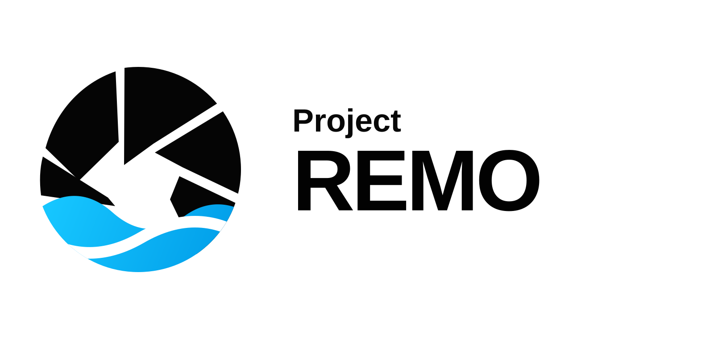
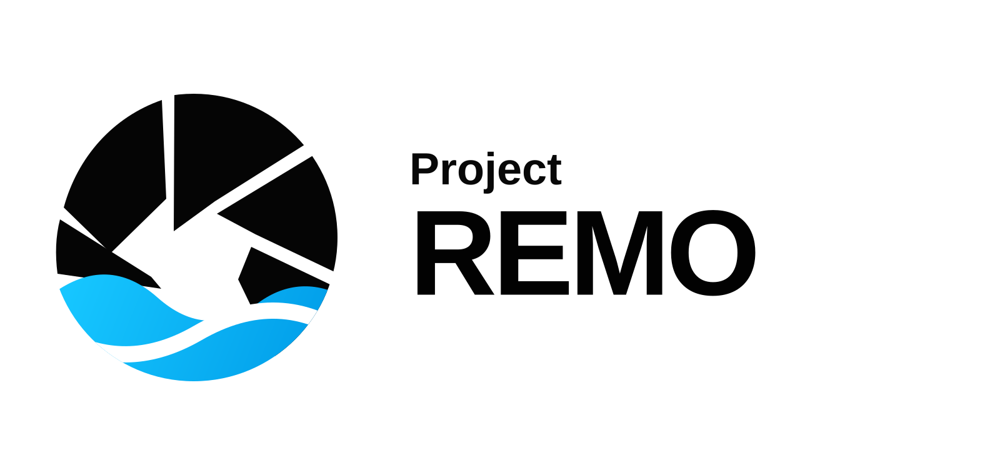
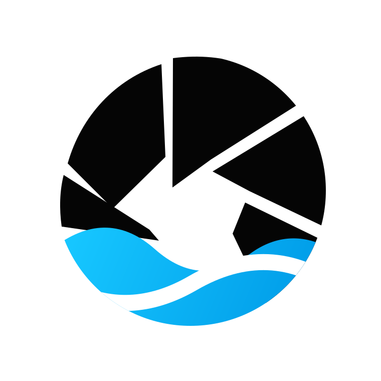
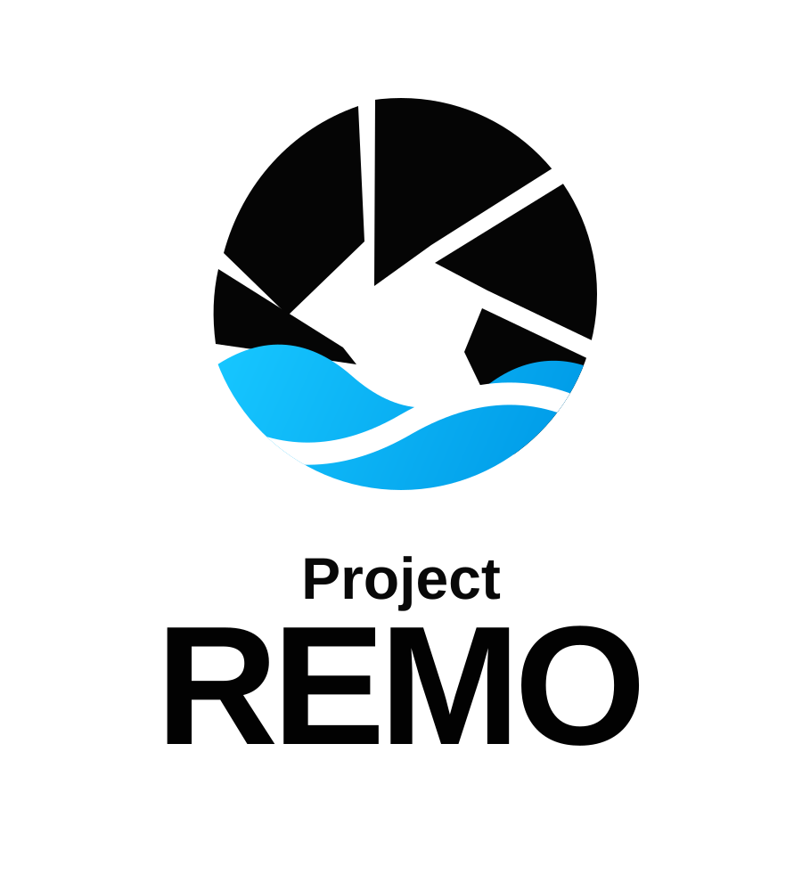
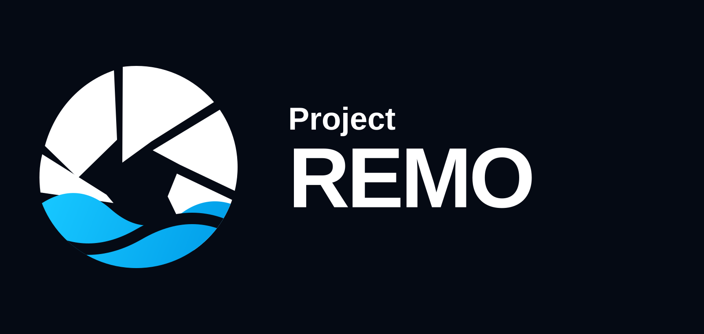
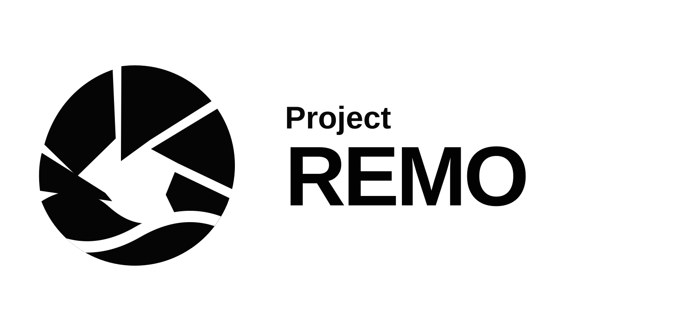

Primary Optimized
白底主标，用于网站、PPT、商业计划书封面和品牌露出。
这一组以原始 `Project REMO logo v1.png` 为基础，只优化矢量几何、比例、对齐和应用版本。核心识别保持为“快门叶片 + 水波 + Project/REMO”。

白底主标，用于网站、PPT、商业计划书封面和品牌露出。

透明背景版，便于贴到图片、视频、网页和演示材料中。

图形单独版，用于头像、App 图标、favicon、贴纸和产品标识。

上下堆叠版本，用于竖版海报、方形封面和社媒头像扩展。

深色背景反白版，适配当前网站的深海黑蓝视觉体系。

单色版本，用于丝印、镭雕、低成本印刷和法律文件。